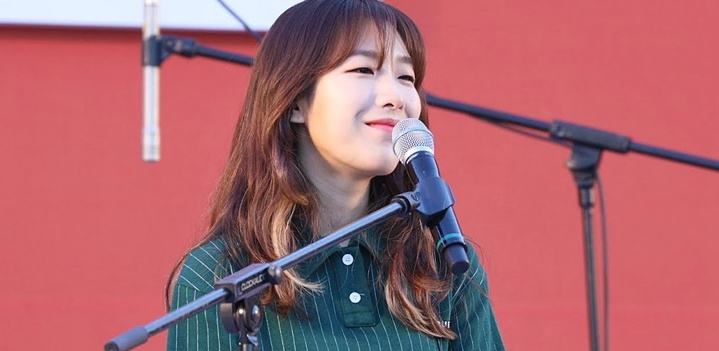

팬페이지
💜 달총의 프로필 💜

치즈 (달총 CHEZZE) / 본명 김혜경
출생 - 1991년 8월 19일
소속사 - 매직스트로베리사운드
학력 - 동아방송예술대학 보컬
데뷔 - 2011년 디지털 싱글 앨범 [나홀로 집에 (Home Alone)]
👇 사이트 👇
공식 홈페이지
인스타그램
페이스북
유튜브
브이앱
각기 다른 치즈의 깊은 풍미처럼 다양한 매력의 어반 팝 스타일을 추구하는 싱어송라이터 CHEEZE.
현재 매직스트로베리사운드에 소속되어 있으며, 유일한 멤버인 달총으로 구성되어있다.
2010년 12월 4인조로 결성, 다음 해 12월 싱글 ‘나홀로 집에’를 발매하면서 데뷔하였고,
첫 정규작 [Recipe!]를 통해 작사/작곡/편곡/노래까지 완성도 있는 음악들을 선보이며, 다채롭고 트렌디한 매력을 뽐냈다.
명랑한 에너지를 담은 타이틀곡 ‘망고’는 새로운 음악을 찾던 리스너들에게 CHEEZE의 이름을 각인시켰다.
2015년 5월, 꾸밈없는 순수한 젊음을 표현한 [Plain]을 발매했다.
‘Madeleine Love’, ‘일기예보’, ‘모두의 순간’, ‘Romance’, ‘퇴근시간’ 등이 골고루 인기를 얻으며, CHEEZE라는 아티스트를 널리 알렸다.
이후로 그룹의 음악적 영감을 영화에 빗대어 표현한 싱글 ‘Mood Indigo’를 발표했고, 2016년 6월에 발매한 미니앨범 [Q]에 이르기까지 CHEEZE의 음악은 젊은 팬층에게 큰 호응을 얻었다.
2017년, CHEEZE의 멤버였던 구름이 솔로활동을 위해 탈퇴하면서, 달총 1인 그룹으로 개편됐다. 이후로 ‘좋아해(bye)’, ‘Be There’, ‘다음에 또 만나요’, ‘Everything to’ 등을 꾸준히 선보이며,
그녀의 음악세계를 탄탄히 구축하고 있으며, 2019년 현재에도 그 인기를 이어가고 있다.
DISCOGRAPHY
2019 Mini [Plate]
2019 Single ‘好きだ (bye)’
2018 Single ‘Everything to’
2018 Single SHORT FILM ‘Sequence #3’
2018 Single SHORT FILM ‘Sequence #2’
2017 Single SHORT FILM ‘Sequence #1’
2017 Single ‘Be There’
2017 Single ‘좋아해 (bye)’
2016 Mini [Q]
2016 Single ‘Mood Indigo’
2015 Single ‘이제 뭐라고 (Feat. Kirin)’
2015 Album [Plain]
2014 Single ‘잘 다녀와요’
2014 Single ‘Do It Again’
2014 Single ‘Alone’
2014 Single ‘Pinocchio (피노키오)’
2014 Single ‘Room #501’
2013 Single ‘Balloons’
2013 Single ‘Mystery Girl’
2013 Single ‘Ticket’
2013 Album [Recipe!]
2011 Single ‘나 홀로 집에 (Home Alone)’
FEATURING
2018 dress ‘Ordinary Christmas (feat. CHEEZE, BrotherSu)’
2018 준(JUNE) ‘Autumn Leaves (Feat. CHEEZE)’
2018 마인드유(어쿠루브舊) ‘권태 (Feat. CHEEZE)’
2018 노리플라이 ‘나의 봄 (Feat.CHEEZE)’
2017 준호(2PM) ‘어차피 잊을 거면서 (Feat. CHEEZE)’
2017 이민혁(HUTA) ‘Purple Rain (Feat. CHEEZE)’
2017 빌리어코스티 ‘왜 그랬을까 (Feat. CHEEZE, 김민석 of 멜로망스)’
2016 예성 ‘벚꽃잎(Spring in me) (Duet. CHEEZE)’
2016 MC그리 ‘How We (Feat. CHEEZE)’
2016 레디 (Reddy), 지투 (G2) ‘Thank You (Feat. CHEEZE)’
2016 glowingdog (글로잉독) ‘Lonesome Highway (Feat. CHEEZE)’
2015 올티 ‘무중력 (Feat. CHEEZE, 쟈코비 플래닛)’
2015 앤덥 ‘기시감 (Feat. CHEEZE)’
2013 브라더수 ‘소심해서 그래 (Feat. CHEEZE)’
PARTICIPATION
2018 드라마 <남자친구> OST ‘영화 같던 날’
2018 드라마 <리치맨> OST ‘Hard for me’
2017 드라마 <사랑의 온도> OST ‘I Still’
2017 Single ‘Your BGM Vol.1‘ with Eric Nam
2017 드라마 <수상한 파트너> OST ‘어떨까 넌’
2016 드라마 <이번 주 아내가 바람을 핍니다> OST ‘사랑이라오’